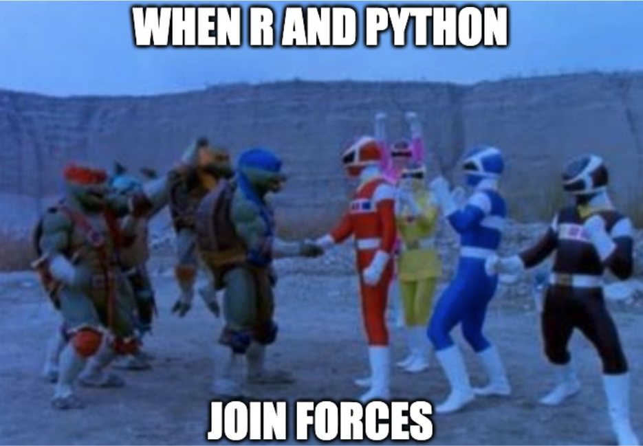

Are you in a statistics class using R and wondering “WHY on earth are we learning Python now?!” R is easy to learn, convenient, and has a great user interface. If you are anything like me, coding is not your forte, and the thought of learning ANOTHER coding platform is terrifying. But I’ve got your answer!
What’s super interesting about Python is that you can use it within R. I’ve grown comfortable with R over the past semester, and knowing that I can use Python without exiting R is a relief. This post is going to walk you through how to set up Python on R to allow you to practice the same things I’m learning!
To start, create a python script by clicking on the terminal (to the right of the console below) and type in touch test.python. You have now created an empty python file in your directory!
Click on that file to open it. Play around with its functions to get comfortable with the formatting! For example, type print(“how are you”) and run it to see this appear in the console. Going back to the terminal, you can also type in python3 test.python and all code in that file will print out. Another thing to note: you should see that there are 3 arrows in your console (looks like >>>). This means that you are now using python instead of R (>). NOw that you have seen how python looks in R, let’s try to combine python in R markdown!
First things first: notice how when we use R markdown, we start the code chunk with "’’‘{r}". Similarly, the python code chunks will start with’’’{python}. For example:
hay = "how are you"
hay[0:11]## 'how are you'To start, load the reticulate package in R (this allows R and Python to cross talk), and try running the codes below.
#R code chunk
library(reticulate)
hi<-"How are"#Python code chunk
hi="you?"
print(r.hi,hi)## How are you?Notice how you can combine R and python to create an output! The r. feature allows you to access objects that have been defined with R, just as using py$ allows you to access features defined by python.
#R code chunk
cat(c(hi,py$hi))## How are you?Lists combine saved objects from R and python together!
my_stuff = ["a", 5, 35, 9, "j", "z"]
my_stuff[0] #pulls out the first object in data## 'a'One thing that is different between R and python is that the first object is called 1, while the first object in python is 0. In this case, when we ask python to return the “zeroth” object, it returns a, which is the first object. Cool right? These are just some of MANY functions you can do with python in R. Play around with these beginner functions, and soon you will be a pro!
